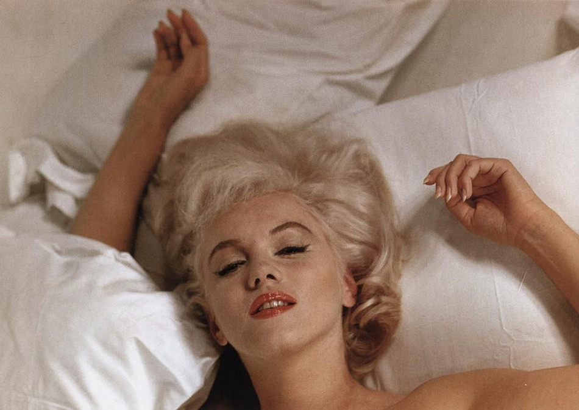
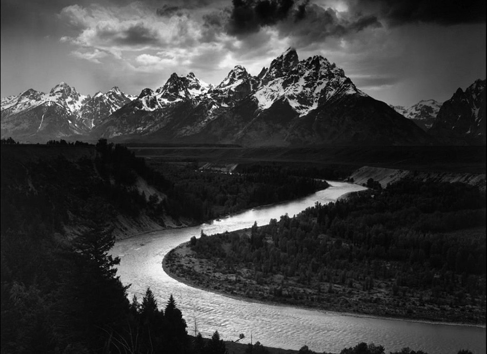
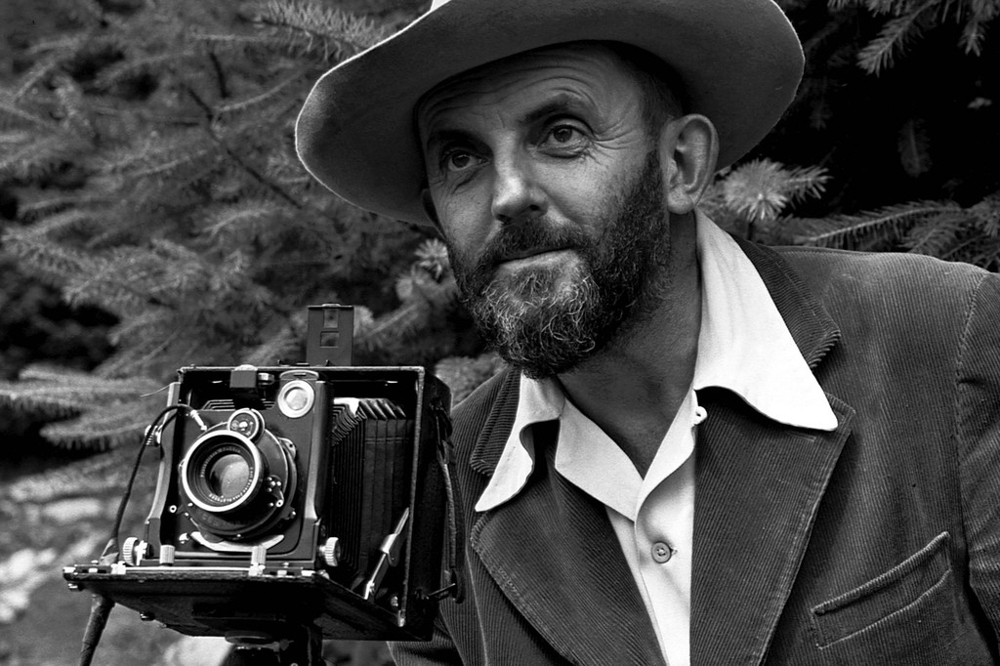
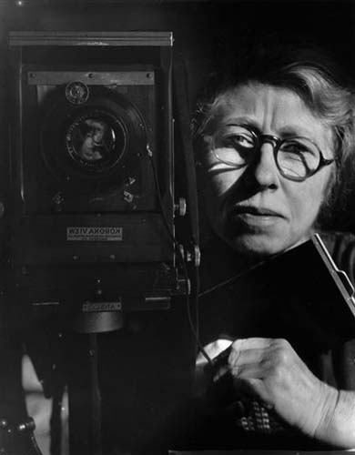

Fotografías

Gare Saint Lazare_Paris

flores

Audrey Hepburn

Marilyn

parquenatural_yosemite

prisioneros campos nazis
Fotógrafos

Margaret bouket
fue la primera corresponsal de guerra y la primera fotoperiodista de la revista Life.

Eve Arnold
sus reportajes sociales que le dieron el honor de ser la primera mujer miembro de pleno derecho de la Agencia Magnum en el año 1957.

Ansel Adams
creó el famoso Sistema de Zonas, para calcular con precisión la exposición en fotografía.

Henri Cartier Bresson
Cofundador de la Agencia Magnum, destacó también en la fotografía documental, el retrato y los paisajes. Considerado padre de la fotografía callejera.

Cecil Beaton
fascinado por el glamour, la elegancia y el estilo, acaparó las portadas de revistas como Vogue y Vanity Fair desde los años 20.

Imogen Cunningham
se dedicó a fotografiar su entorno más cercano, las flores de su jardín, creando unas composiciones naturales abstractas que han quedado para la historia como parte fundamental de su obra de estilo pictorialista.